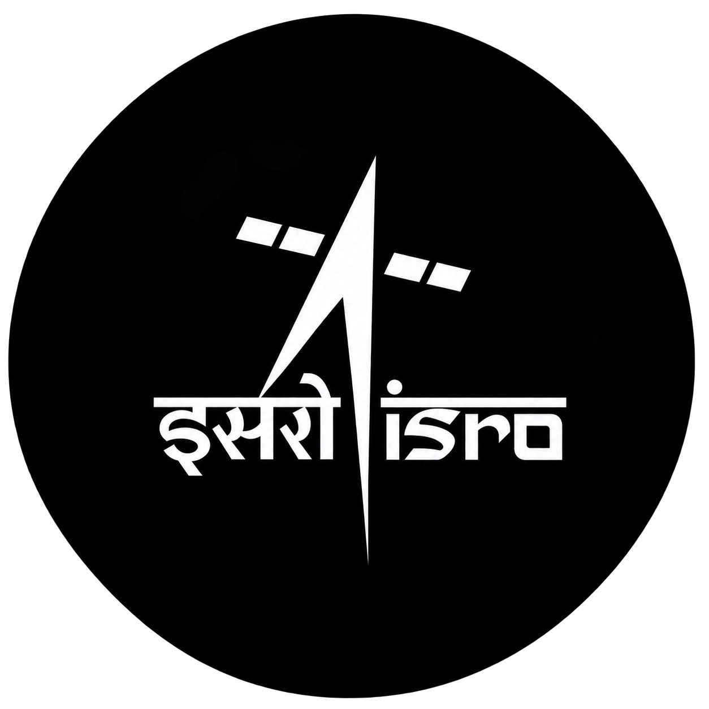

Vishwakarma Institute of Information Technology
2023 – 2026B.Tech in Information Technology · CGPA: 8.53/10.0
AI Research · AI Engineering
Inference Optimization · Multi-Agent AI · LLM Engineering · Multimodal Intelligence
⌖ Pune, India
I am a Bachelors Information Technology graduate with an interest in building intelligent systems and exploring the intersection of artificial intelligence, language models, and autonomous workflows. My experience includes research at Space Applications Centre, ISRO, and developing RAG systems, multimodal AI solutions, and multi-agent architectures.
B.Tech in Information Technology · CGPA: 8.53/10.0
Diploma in Information Technology · Aggregate: 90.25%

AI Research Intern · Ahmedabad, India · Aug 2025 – Feb 2026
Technical summary
Agentic AI · Tool Calling · API Integration
View GitHub repository ↗Technical summary
Contradiction Detection · Embeedings · FastAPI
View GitHub repository ↗Technical summary
NLP · Multimodal · Video Intelligence
View GitHub repository ↗Technical summary
Vector DB · Semantic Search
View GitHub repository ↗Technical summary
Blockchain · RAG-Integrity · Authenntication
View GitHub repository ↗Python, Java, SQL
Machine Learning, Deep Learning, NLP, Generative AI, Multimodal AI, Transformer Models
LangGraph, LangChain, Multi-Agent Systems, AI Agent Planning and Reasoning, Multi-Agent Coordination, Tool Calling, Adaptive Retrieval, Context Compression
Model Quantization, Long-Context LLM Inference, KV Cache Optimization, Memory-Efficient Attention, Inference-Time Scaling, Preference Optimization
FastAPI, Flask, React, Streamlit, PyTorch, OpenCV, MediaPipe, PyMuPDF
MiniLM, CLIP, ChromaDB, llama.cpp, GGUF, Hugging Face Transformers, LoRA / PEFT
GPU-Accelerated Computing, PostgreSQL, MySQL, Git, Docker
IEEE ICS CNA 2024 · Dec 2024
IJACEN · Mar 2025
IJAECS · Jul 2025
Have an interesting project or research idea?
Feel free to reach out for research collaborations, AI opportunities, or a technical discussion.